# A tibble: 1,704 × 2
lifeExp gdpPercap
<dbl> <dbl>
1 28.8 779.
2 30.3 821.
3 32.0 853.
4 34.0 836.
5 36.1 740.
6 38.4 786.
7 39.9 978.
8 40.8 852.
9 41.7 649.
10 41.8 635.
# ℹ 1,694 more rows5 二変数の要約
多くの場合、変数それ自体ではなく2つ（あるいは複数）の変数の間の関係に関心があることが多いのではないでしょうか。例えば、一人あたりGDPが高いと平均寿命も長くなるのかどうか、など。続いては、このように2つの変数間の関係を要約する方法を学んでいきます。
5.1 連続変数同士の関係
5.1.1 共分散
相関係数 (correlation coefficient) 、特に相関、という言葉は聞いたことがあるでしょう。相関係数とは2つの変数間の関係の強さを見る際に、よく使われる指標です。
これから相関係数について説明しますが、ややこしいので、興味のない人はコードまで飛ばしてください。
まずは、相関係数を理解するために、共分散 (covariance) について学びます。一度、分散の定義に戻ります。
\[ \sigma^2 = \frac{\sum_{i=1}^N (x_i - \bar{x})^2}{N} \]
\(\bar{x}\)は\(x\)の平均でした。したがって、\((x_i - \bar{x})\)は変数の値が平均からどれだけ離れているかを表しており、それを二乗して面積に変換して、その平均を求めることで、変数の散らばり具合を表していました。
共分散は分散の二変数バージョンであり、次のように定義されます。分散との違いは分母の総和の中身が\((x_i - \bar{x})^2\)から\((x_i - \bar{x})(y_i - \bar{y})\)に変わっていることです。
\[ \sigma_{xy}^2 = \frac{\sum_{i=1}^N (x_i - \bar{x})(y_i - \bar{y})}{N} \]
それでは、\((x_i - \bar{x})(y_i - \bar{y})\)について考えたいと思います。この前半は既に述べたように\(x_i\)と平均値との差です。よって、前半は\(x_i\)が平均値よりも大きければ正、小さければ負の値になります。後半については\(x_i\)が\(y_i\)に置き換わっただけで、意味は同様です。
したがって、\((x_i - \bar{x})(y_i - \bar{y})\)全体としては\(x_i\)と\(y_i\)が共に平均値より大きいもしくは小さければ正の値を取ります。一方が平均値より大きく、他方が小さければ負の値を取ります。
より直感的に言えば、\(\bar{x}\)と\(\bar{y}\)を原点とする平面を考えると、\((x_i,y_i)\)が第1（右上）もしくは第3象限（左下）にあるときに、\((x_i - \bar{x})(y_i - \bar{y})\)は正の値を取ります。逆に、第2（左上）もしくは第4象限（右下）にあるときは負の値を取ります。

共分散はそのような\((x_i - \bar{x})(y_i - \bar{y})\)の平均値なので、正の値を取るということは\(x\)と\(y\)が正の比例関係にあり、負の値を取るということは負の比例関係にあるということを示唆しています。
5.1.2 複数変数の選択
それでは、共分散を求めたいと思います。平均値や分散を求めるときは1つの変数をデータフレームから取り出しましたが、共分散の場合は2つ（あるいはそれ以上）の変数を取り出す必要があります。RとPythonではそれぞれ、次のように書きます。
- まず、データフレームの後ろに”[,]`を付けます。
,の左側では横（観察）を選択しますが、今回は全ての観察を用いるので何も指定しません。,の右側では縦（変数）を選択します。c()の中に変数名オブジェクトを入れることで、複数の変数名のオブジェクトを作成しています。
なお、Rではtidyverseというパッケージ群を使うことで、簡便にデータフレームの処理が可能になります。
tidyverse
tidyverseとは狭義には特定のパッケージの集まりです。広義には既存のRを改善するためのプロジェクトや考え方と言ってもいいかもしれません。
tidyverseは主観的には便利なのですが、Rの標準的な書き方とはやや異なるため、結果的にRを分断しかねない要素もあります。この資料ではtidyverseを使って書こうと思います。
具体的にはtidyverseの中のdplyrというパッケージを使いますが、tidyverseを読み込むだけで関連パッケージが全て読み込まれます。
── Attaching core tidyverse packages ──────────────────────── tidyverse 2.0.0 ──
✔ dplyr 1.1.4 ✔ readr 2.1.5
✔ forcats 1.0.0 ✔ stringr 1.5.1
✔ ggplot2 3.5.0 ✔ tibble 3.2.1
✔ lubridate 1.9.3 ✔ tidyr 1.3.1
✔ purrr 1.0.2
── Conflicts ────────────────────────────────────────── tidyverse_conflicts() ──
✖ dplyr::filter() masks stats::filter()
✖ dplyr::lag() masks stats::lag()
ℹ Use the conflicted package (<http://conflicted.r-lib.org/>) to force all conflicts to become errors# A tibble: 1,704 × 2
lifeExp gdpPercap
<dbl> <dbl>
1 28.8 779.
2 30.3 821.
3 32.0 853.
4 34.0 836.
5 36.1 740.
6 38.4 786.
7 39.9 978.
8 40.8 852.
9 41.7 649.
10 41.8 635.
# ℹ 1,694 more rowsselect()を使います。
pandasでは[.loc[,](https://pandas.pydata.org/docs/reference/api/pandas.DataFrame.loc.html)]メソッドを使います。
lifeExp gdpPercap
0 28.801 779.445314
1 30.332 820.853030
2 31.997 853.100710
3 34.020 836.197138
4 36.088 739.981106
... ... ...
1699 62.351 706.157306
1700 60.377 693.420786
1701 46.809 792.449960
1702 39.989 672.038623
1703 43.487 469.709298
[1704 rows x 2 columns],の左側では横（観察）を選択しますが、今回は全ての観察を用いるので:を入れます。,の右側では縦（変数）を選択します。[]の中に変数名オブジェクトを入れることで、複数の変数名のオブジェクトを作成しています。
なお、次のように省略して書くこともできます。
5.1.3 共分散（再訪）
共分散を求めます。なお、対角成分（左上や右下など）は分散を示しています。
lifeExp gdpPercap
lifeExp 166.8517 74323.2
gdpPercap 74323.1957 97169410.1 lifeExp gdpPercap
lifeExp 166.851664 7.432320e+04
gdpPercap 74323.195748 9.716941e+07ところで、7.432320e+04とはなんぞやと思うかもしれません。これは浮動小数点と呼ばれるもので、\(7.432320...\times10^4 = 74323.20...\)を意味しています。
5.1.4 相関係数
共分散は2つの変数の比例関係を示していますが、一つの問題があります。それは、変数の散らばり具合も含んでいるため、その値の解釈が難しいということです。試しに、人口も含めて共分散を求めてみます。
lifeExp pop gdpPercap
lifeExp 1.668517e+02 8.907024e+07 7.432320e+04
pop 8.907024e+07 1.126950e+16 -2.678859e+10
gdpPercap 7.432320e+04 -2.678859e+10 9.716941e+07例えば、平均寿命と人口の共分散は\(89070240\)で、平均寿命と一人あたりGDPの共分散は\(74323\)です。では、前者の方が大きな値を取っているので、人口のほうが一人あたりGDPよりも平均寿命と強い関係にあると言っていいでしょうか。もしかすると人口のほうが大きな値を取りやすいので、平均値よりも離れやすく、その結果として共分散も大きくなっているのかもしれません。
そこで、変数の値の大きさに左右されずに関係性を示すものとして相関係数を使いたいと思います。相関係数は共分散を\(x_i\)の分散と\(y_i\)の分散の積で割ったものになります。
\[ \rho_{xy} = {\sigma^2_{xy} \over \sigma_x \sigma_y} \]
直感的に言えば、\(x_i\)の分散と\(y_i\)の分散で割ることによって、\(x_i\)と\(y_i\)の散らばり具合を相殺（調整）しています。結果として、相関係数は\(-1\)から\(1\)の間に収まります。
それでは、相関係数を求めます。人口よりも一人あたりGDPの方が平均寿命と高い相関係数を持っている、すなわち強い関係にあることが分かります。
lifeExp pop gdpPercap
lifeExp 1.00000000 0.06495537 0.58370622
pop 0.06495537 1.00000000 -0.02559958
gdpPercap 0.58370622 -0.02559958 1.000000005.2 可視化の重要性
ところで、これまで「強い関係」という言葉を定義せずに用いていました。重要なことは、相関係数で分かることは「どれくらい2つの変数が直線的な関係にあるか」ということ（だけ）です。
ここで、Wikipediaから画像を拝借して、この点を考えたいと思います。いわゆる散布図 (scatter plot) と呼ばれるもので、横軸が\(x_i\)、縦軸が\(y_i\)を表していると考えてください。

- まず、1段目を見ると分かるように相関係数は高い（低い）値を取れば取るほど2つの変数は直線に近づいていきます。また、相関係数が正であれば正の比例関係、負であれば負の比例関係にあることも分かります。
- なお、「どれくらい相関係数が高ければいいのか」というのは意味のない疑問だと思っています。例えば、\(0.8\)でも関係は弱いと思う人もいれば、\(0.4\)でも強いと思う人もいるでしょう。
- 続いて、2段目では全ての図において相関係数は\(1\)（もしくは\(-1\)）になっています。ここで異なるのはそれぞれの直線の傾きです。「強い関係」と聞くと傾きが大きいと想像するかもしれませんが、相関係数はそこまで意味しません。
- 最後に、3段目では全ての図において相関係数は\(0\)となっています。それぞれ2つの変数は何かしらの関係性を持っていそうですが、相関係数では直線以外の関係性を捉えることはできません。
以上のことをまとめると、相関係数だけで分かることは少ないということではないでしょうか。そして教訓は相関係数という数値だけでなく、実際にグラフを作るということでしょう。
この点をより実感できるものとしてAnscombe”s quartetやDatasaurus Dozenというデータ（およびグラフ）があります。これらのデータは全て同じ平均値や分散、相関係数を持っていますが、それぞれ異なる印象を与えます。


したがって、相関係数だけでなく平均値や分散についても数値だけを見るのではなく、グラフを作って確認するのがよいでしょう。グラフの作成は次章からのテーマです。
5.3 連続変数と離散変数の関係
5.3.1 グループごとの平均値
グループごとに平均値を求めることで、離散変数と連続変数の関係を見ることができます。Rではすでに触れたtidyverseによって簡単に処理できます。
R
# A tibble: 5 × 4
continent mean_lifeExp mean_pop mean_gdpPercap
<fct> <dbl> <dbl> <dbl>
1 Africa 48.9 9916003. 2194.
2 Americas 64.7 24504795. 7136.
3 Asia 60.1 77038722. 7902.
4 Europe 71.9 17169765. 14469.
5 Oceania 74.3 8874672. 18622.- まず、
group_by()でどの変数がグループを表しているかを指定します。 - 次に、
summarise()の中で平均値を計算し、新しい変数として定義します。- ここでは
<-やないんかいと突っ込みたくなりますが、=なので気をつけてください。
- ここでは
pandasではこのように書きます。
lifeExp pop gdpPercap
continent
Africa 48.865330 9.916003e+06 2193.754578
Americas 64.658737 2.450479e+07 7136.110356
Asia 60.064903 7.703872e+07 7902.150428
Europe 71.903686 1.716976e+07 14469.475533
Oceania 74.326208 8.874672e+06 18621.609223- まず、
groupby()でどの変数がグループを表しているかを指定します。 - 次に
[[...]]で平均値を計算したい変数を指定します。 - 最後に、
.mean()で平均値を求めます。
pandasでの集計には注意が必要です。グループとして使った変数continentは集計後のデータフレームでは変数ではなくindexになっています。
indexとは各観察（行）を表す目印のようなものです。
グループ化に使った変数をindexとせずに、変数のままにする場合は、次のようにas_index=Falseを付けます。
continent lifeExp pop gdpPercap
0 Africa 48.865330 9.916003e+06 2193.754578
1 Americas 64.658737 2.450479e+07 7136.110356
2 Asia 60.064903 7.703872e+07 7902.150428
3 Europe 71.903686 1.716976e+07 14469.475533
4 Oceania 74.326208 8.874672e+06 18621.609223平均値だけでなく、その他の要約統計量も同様に計算できます。
5.3.2 グループのネスト
グループを表す変数は1つに限る必要はありません。例えば、各年の各大陸の平均値を求めることも可能です。
R
`summarise()` has grouped output by 'continent'. You can override using the
`.groups` argument.# A tibble: 60 × 5
# Groups: continent [5]
continent year mean_lifeExp mean_pop mean_gdpPercap
<fct> <int> <dbl> <dbl> <dbl>
1 Africa 1952 39.1 4570010. 1253.
2 Africa 1957 41.3 5093033. 1385.
3 Africa 1962 43.3 5702247. 1598.
4 Africa 1967 45.3 6447875. 2050.
5 Africa 1972 47.5 7305376. 2340.
6 Africa 1977 49.6 8328097. 2586.
7 Africa 1982 51.6 9602857. 2482.
8 Africa 1987 53.3 11054502. 2283.
9 Africa 1992 53.6 12674645. 2282.
10 Africa 1997 53.6 14304480. 2379.
# ℹ 50 more rows lifeExp pop gdpPercap
continent year
Africa 1952 39.135500 4.570010e+06 1252.572466
1957 41.266346 5.093033e+06 1385.236062
1962 43.319442 5.702247e+06 1598.078825
1967 45.334538 6.447875e+06 2050.363801
1972 47.450942 7.305376e+06 2339.615674
1977 49.580423 8.328097e+06 2585.938508
1982 51.592865 9.602857e+06 2481.592960
1987 53.344788 1.105450e+07 2282.668991
1992 53.629577 1.267464e+07 2281.810333
1997 53.598269 1.430448e+07 2378.759555
2002 53.325231 1.603315e+07 2599.385159
2007 54.806038 1.787576e+07 3089.032605
Americas 1952 53.279840 1.380610e+07 4079.062552
1957 55.960280 1.547816e+07 4616.043733
1962 58.398760 1.733081e+07 4901.541870
1967 60.410920 1.922986e+07 5668.253496
1972 62.394920 2.117537e+07 6491.334139
1977 64.391560 2.312271e+07 7352.007126
1982 66.228840 2.521164e+07 7506.737088
1987 68.090720 2.731016e+07 7793.400261
1992 69.568360 2.957096e+07 8044.934406
1997 71.150480 3.187602e+07 8889.300863
2002 72.422040 3.399091e+07 9287.677107
2007 73.608120 3.595485e+07 11003.031625
Asia 1952 46.314394 4.228356e+07 5195.484004
1957 49.318544 4.735699e+07 5787.732940
1962 51.563223 5.140476e+07 5729.369625
1967 54.663640 5.774736e+07 5971.173374
1972 57.319269 6.518098e+07 8187.468699
1977 59.610556 7.225799e+07 7791.314020
1982 62.617939 7.909502e+07 7434.135157
1987 64.851182 8.700669e+07 7608.226508
1992 66.537212 9.494825e+07 8639.690248
1997 68.020515 1.025238e+08 9834.093295
2002 69.233879 1.091455e+08 10174.090397
2007 70.728485 1.155138e+08 12473.026870
Europe 1952 64.408500 1.393736e+07 5661.057435
1957 66.703067 1.459635e+07 6963.012816
1962 68.539233 1.534517e+07 8365.486814
1967 69.737600 1.603930e+07 10143.823757
1972 70.775033 1.668784e+07 12479.575246
1977 71.937767 1.723882e+07 14283.979110
1982 72.806400 1.770890e+07 15617.896551
1987 73.642167 1.810314e+07 17214.310727
1992 74.440100 1.860476e+07 17061.568084
1997 75.505167 1.896480e+07 19076.781802
2002 76.700600 1.927413e+07 21711.732422
2007 77.648600 1.953662e+07 25054.481636
Oceania 1952 69.255000 5.343003e+06 10298.085650
1957 70.295000 5.970988e+06 11598.522455
1962 71.085000 6.641759e+06 12696.452430
1967 71.310000 7.300207e+06 14495.021790
1972 71.910000 8.053050e+06 16417.333380
1977 72.855000 8.619500e+06 17283.957605
1982 74.290000 9.197425e+06 18554.709840
1987 75.320000 9.787208e+06 20448.040160
1992 76.945000 1.045983e+07 20894.045885
1997 78.190000 1.112072e+07 24024.175170
2002 79.740000 1.172741e+07 26938.778040
2007 80.719500 1.227497e+07 29810.188275しかし、ここまで多いとよく分からないので、やはりグラフにするのが人類には優しいのでしょう。